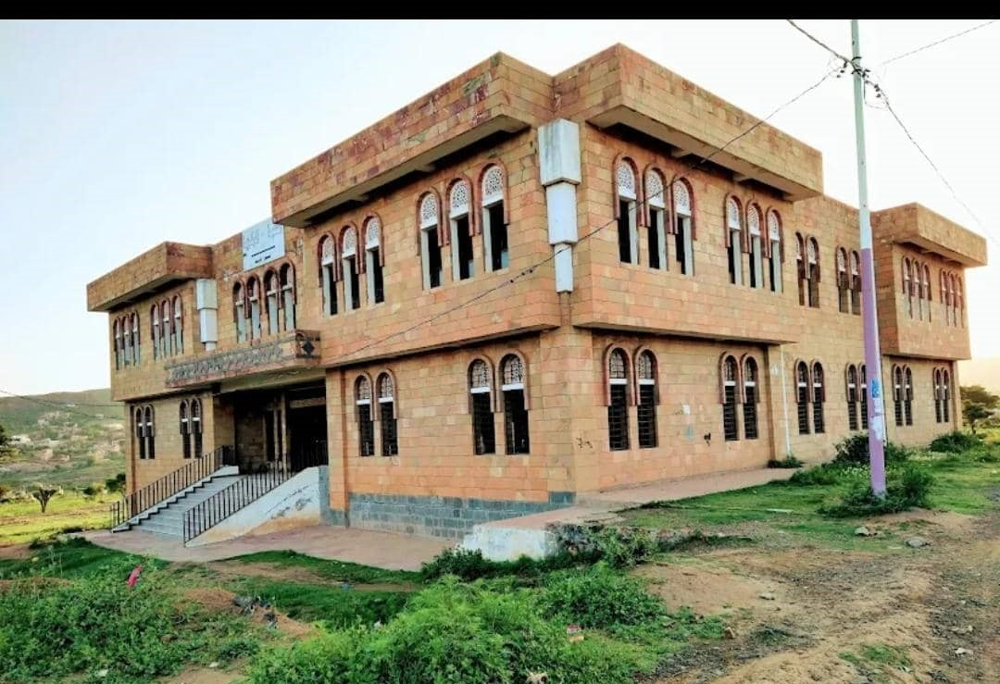

📚 عن المكتبة
مكتبة جامعة تعز - فرع التربة هي صرح معرفي يهدف إلى دعم العملية التعليمية والبحثية من خلال توفير مصادر معرفية غنية ومتنوعة سواء كانت ورقية أو رقمية. تعدّ بيئة مثالية للقراءة، المراجعة، والاستفادة من مصادر المعلومات.

🎯 أهداف المكتبة
- دعم المناهج الدراسية للطلاب والباحثين.
- توفير مصادر المعلومات الورقية والإلكترونية الحديثة.
- تحفيز البحث العلمي والإبداع الأكاديمي.
- رفع كفاءة الاستخدام التقني في الوصول للمعلومات.
🧩 أقسام المكتبة
- قسم الإعارة والخدمات المرجعية.
- قاعة المطالعة العامة.
- قاعة المطالعة الإلكترونية.
- قسم الدوريات والرسائل الجامعية.
- قسم الفهرسة والتصنيف.
🛠️ الخدمات المقدّمة
- الإعارة الداخلية والخارجية.
- الوصول إلى قواعد بيانات رقمية.
- خدمة التصوير والطباعة.
- خدمة الإرشاد الببليوغرافي للباحثين.
- خدمة الإنترنت والبحث في الفهارس الإلكترونية.
📌 تعليمات الدخول والخروج
- وضع الأغراض الشخصية في صندوق الأمانات عند المدخل.
- تسجيل الاسم والتوقيع في سجل الزوار.
- تحديد نوع الزيارة ووقت الدخول والخروج بدقة.
📕 قواعد استعارة الكتب
- مدة الإعارة أسبوع قابلة للتجديد.
- لا يُسمح بإعارة الكتب المرجعية أو الرسائل الجامعية.
- في حال التأخير في الإرجاع، تُفرض غرامة يومية رمزية.
🧾 طريقة الحصول على عضوية المكتبة
- تعبئة نموذج التسجيل في قسم الإعارة.
- إحضار صورة شخصية وبطاقة الطالب أو الموظف.
- الحصول على بطاقة عضوية مجانية صالحة لمدة عام دراسي.
🚫 التعليمات العامة للزائرين
- الالتزام بالهدوء التام داخل القاعات.
- الامتناع عن تناول الطعام والشراب.
- الحفاظ على نظافة المكان والممتلكات العامة.
- احترام أنظمة المكتبة وتعليمات المشرفين.
⏰ مواعيد العمل
الأحد - الخميس: 8 صباحًا - 8 مساءً
الجمعة والسبت: عطلة